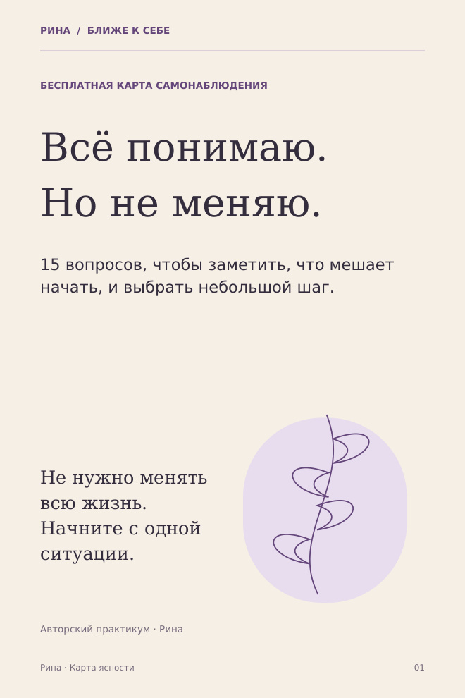

БЛИЖЕ К СЕБЕ
Начните с одной
знакомой ситуации.
Когда мыслей много, а ясности мало, иногда помогает один точный вопрос. Здесь можно выбрать материал для самостоятельной работы.

ПОДАРОК ПОДПИСЧИКАМ
Всё понимаю.
Но не меняю.
15 вопросов, пять тем для самонаблюдения и один небольшой шаг. PDF, 12 коротких страниц.
Подпишитесь на @rinazlat и напишите в Direct слово ЯСНОСТЬ, чтобы запросить карту.
Открыть Instagram РиныАвтоматическая выдача пока не подключена. Ответ может занять время.

САМОСТОЯТЕЛЬНЫЙ ПРАКТИКУМ
Один
честный шаг.
Семь практик под конкретные ситуации: от «чего я хочу?» до разговора о помощи. С примерами и местом для ваших решений.
790 ₽
Посмотреть содержание и образецPDF · 14 страниц · личное сопровождение не включено